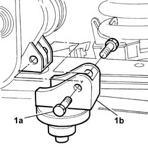

1088B34 engine cooling radiator support pin one left or right r r
- Path
- Procedures > 10 ENGINE > 1088 ENGINE COOLING > 1088B ENGINE COOLING RADIATOR - R + R > 1088B34 engine cooling radiator support pin one left or right r r
- Kind
- repair procedure (removal / refitting; the operation number is the code)
- Applies to
- all engines; all production periods
- Interactive page
- https://sloeber94.github.io/elrnDB-fDbl/en/#/2584303
Applies to: all engines; all production periods
 Removing
Removing
 Refitting
RefittingPlace the car on a ramp.
1. Undo the fixing bolts (1a) and remove the radiator pin (1b).

Applies to: all engines; all production periods
Removing
RefittingPlace the car on a ramp.
1. Undo the fixing bolts (1a) and remove the radiator pin (1b).
Applies to: all engines; all production periods
Refitting
RemovingPosition the radiator pin and fix it with the bolts.
Remove the vehicle from the ramp.
Applies to: all engines; all production periods
Refitting
RemovingPosition the radiator pin and fix it with its bolts.
Remove the vehicle from the ramp.